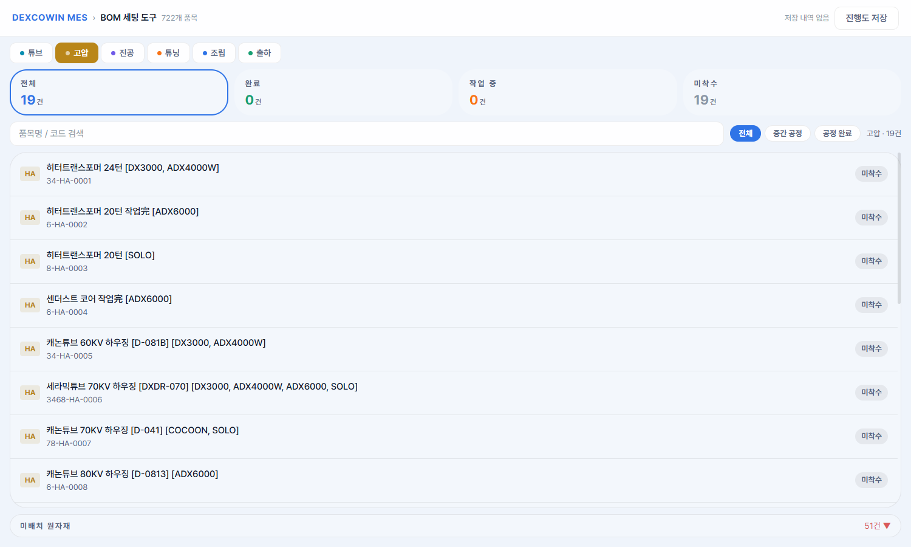
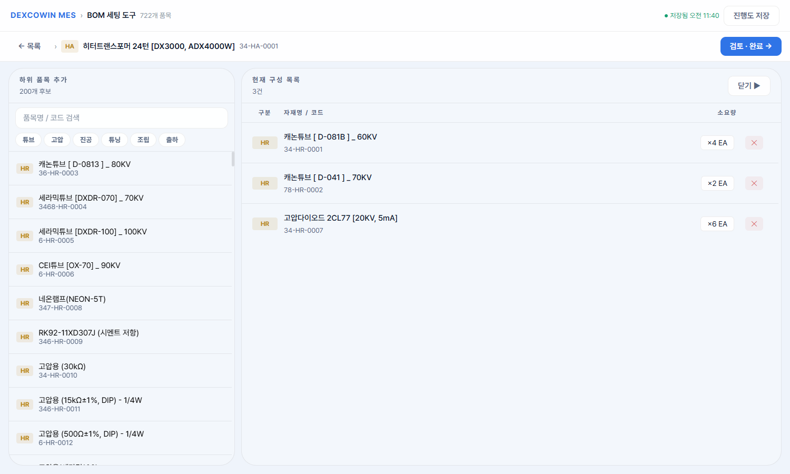

DEXCOWIN MES · 사용 설명서
BOM 세팅 도구
사용 설명서
부서별 품목의 BOM(Bill of Materials, 자재명세서)을 단계별로 입력하고,
검증 후 안전하게 내보내는 오프라인 도구입니다.
설치·로그인 없이 HTML 파일 더블클릭 한 번이면 시작합니다.
이 설명서는 실제 화면 캡쳐를 기준으로 작성됐습니다.
화면에 보이는 것과 다르면 도구가 더 새 버전입니다.
📂 도구 열기 →
🚀 5분 빠른 시작
1빠른 시작
5분 안에 첫 BOM 만들기
아래 4단계만 따라 하면 BOM 한 건이 완성됩니다. 자세한 설명은 다음 섹션부터 이어집니다.
1
📂
파일 더블클릭
bom_setup.html을 더블클릭. 기본 브라우저(Chrome / Edge)에서 자동으로 열립니다.
2
🎯
상위 품목 클릭
부서 탭 선택 → 좌측 리스트에서 BOM 만들 품목 클릭 → 편집 화면으로 진입.
3
➕
하위 품목 추가
우측 후보에서 부품 클릭 → 소요량 입력 → "추가" 버튼. 필요한 만큼 반복.
4
✓
완료로 표시
우상단 "검토 · 완료 →" → 검증 통과 → "완료로 표시". 자동 저장됩니다.
i
중요: 작업 내용은 브라우저에 자동저장되지만,
다른 PC로 이동하거나
최종 결과 정리가 필요하면 우상단의
"진행도 저장"(JSON 다운로드) 버튼을 사용하세요. 자세한 내용은
4. 저장·백업·PC 이동 섹션을 참고하세요.
2화면 둘러보기
화면 구성 한눈에 보기
도구는 메인 / 편집 / 검토 3개의 화면으로 구성됩니다. 각 화면의 어떤 부분이 무슨 역할을 하는지 번호와 함께 살펴봅시다.
단계 코드 한눈에 — R / A / F
도구 곳곳(필터, 미배치 원자재, BOM 그리드 "구분" 칼럼)에서 만나게 되는 한 글자 단계 코드입니다. 의미를 알아두면 화면 설명을 따라가기 쉽습니다.
R
원자재 (Raw)
외부에서 그대로 들어오는 부품. 다른 부품으로 만들어지지 않습니다. 메인 화면 하단 "미배치 원자재" 패널에서 BOM 어딘가에 빠진 원자재가 있는지 점검합니다.
A
중간 공정 (Assembly)
하위 부품을 조합해 만드는 중간 산출물. 다른 품목의 자식으로도, 또 자체 BOM의 부모로도 등장합니다. 단계 필터의 "중간공정"이 이 단계입니다.
F
공정 완료 (Finished)
최종 출하·검사 단계의 완성품. 보통 이 품목의 BOM이 가장 위쪽 부모가 됩니다. 단계 필터의 "공정완료"가 이 단계입니다.
BOM 그리드 첫 칼럼 "구분"의 배지(예: HA, HR, TF)는 앞 글자 = 부서, 뒷 글자 = 단계 코드입니다. 색상은 부서별로 정해져 있습니다.
2-1. 메인 화면 — 작업할 품목 고르기
bom_setup.html — 메인 화면

1
2
3
4
5
6
7
화면 위 파란 동그라미가 가리키는 위치는 아래 설명과 번호가 같습니다.
1
부서 탭 (튜브 / 고압 / 진공 / 튜닝 / 조립 / 출하)
한 번에 한 부서씩 작업합니다. 탭을 바꾸면 화면 전체가 그 부서의 품목으로 갱신됩니다.
2
통계 카드 4개
현재 부서의 전체 / 완료 / 작업 중 / 미착수 품목 수. 진행 상황을 한눈에 파악합니다.
3
검색창
품목명 또는 ERP 코드로 즉시 필터링. 띄어쓰기 없이 일부만 입력해도 됩니다.
4
단계 필터 (전체 / 중간공정 / 공정완료)
중간공정(A) / 공정완료(F) 단계로 좁혀 봅니다. 원자재(R)는 별도 "미배치 원자재" 패널에서 확인합니다. 단계 코드 의미는 위쪽 박스 참고. 끝의 "고압 · 19건"은 현재 표시 중인 건수.
5
상위 품목 리스트
한 행이 한 품목입니다. 행을 클릭하면 그 품목의 편집 화면으로 들어갑니다. 우측 태그로 미착수 / 작업 중 / 완료 상태가 표시됩니다.
6
상단 앱바 ("저장 내역 없음" / "진행도 저장")
왼쪽엔 자동저장 시각, 오른쪽엔 수동 백업·불러오기·내보내기 버튼이 모입니다.
7
미배치 원자재 (접이식)
현재 부서의 원자재(R 단계) 중 아직 어떤 BOM의 자식으로도 추가되지 않은 부품의 수입니다. 빨간 숫자면 누락된 부품이 있다는 뜻 — 클릭하면 펼쳐서 목록을 확인할 수 있습니다.
"미배치 원자재"를 펼치면
▲ 표시를 누르면 다시 접힙니다. 부서 탭을 바꾸면 자동으로 다시 접힙니다.
i
이 목록은 참고용입니다 — 행을 클릭해도 편집 화면으로 들어가지 않습니다. 어떤 원자재가 BOM 어딘가에 빠져 있는지 확인하고, 해당하는 상위 품목을 메인 리스트에서 찾아 들어가서 추가하면 됩니다.
2-2. 편집 화면 — 부품 추가하기
편집 화면 — BOM 항목 3건 추가됨

1
2
3
4
5
6
7
8
왼쪽이 후보 패널, 오른쪽이 현재 BOM 그리드입니다.
1
"← 목록" — 메인 화면으로 돌아가기
현재까지 추가한 항목은 자동 저장됩니다. 단, "완료로 표시"하지 않으면 "작업 중" 상태로 남습니다.
2
현재 편집 중인 상위 품목
부서 배지(예: HA) + 품목명 + ERP 코드. 어떤 품목의 BOM을 짜고 있는지 항상 보입니다.
3
"검토 · 완료 →" 버튼
BOM 작성을 마쳤으면 클릭. 다음 단계인 검토 화면으로 이동합니다.
4
소요량 — ×N EA
한 단위를 만들 때 필요한 부품 수. 버튼을 클릭하면 즉시 인라인 편집 모드로 바뀝니다 (시나리오 B 참고).
5
행 삭제 (✕)
한 번 클릭으로 즉시 삭제. 확인 창은 없습니다. 잘못 누르면 우측 패널에서 다시 추가하세요.
6
하위 품목 추가 패널
검색·부서 칩으로 후보를 좁혀 표시. "200개 후보"는 현재 점수 순으로 상위 200개만 표시한다는 뜻.
7
현재 구성 목록 (BOM 그리드)
4개 열: 구분 / 자재명·코드 / 소요량 / 액션. "구분" 칼럼의 배지(예: HA·HR)는 부서 + 단계 코드(R/A/F)입니다. 행은 추가한 순서대로 누적됩니다.
8
자동저장 인디케이터
상단 앱바에 "● 저장됨 HH:MM"이 초록 점과 함께 표시되면 자동저장 정상. 시각이 갱신되지 않으면 변경사항이 반영되지 않은 것입니다.
하위 품목을 클릭한 직후
A
소요량 입력
기본값은 1. 숫자를 직접 타이핑하거나 한 번에 지우고 새 값 입력. Enter로도 추가 가능.
B
"추가" 버튼
현재 구성 목록 우측에 새 행이 추가되고, 후보에는 "추가됨" 태그가 붙어 흐려집니다.
C
"취소"
방금 클릭한 부품을 추가하지 않고 패널을 접습니다. Esc도 같은 효과.
2-3. 검토 화면 — 마지막 확인
1
"← 편집으로" — 다시 편집
검증 결과를 보고 빠진 부품을 더하거나 잘못된 행을 빼고 싶을 때 사용. 편집 화면으로 돌아갑니다.
2
검증 결과 카드
정상(녹색)이면 완료 가능. 오류(빨강)가 하나라도 있으면 "완료로 표시" 버튼이 비활성화됩니다. 경고(노랑)는 진행은 가능하지만 한 번 더 확인하라는 뜻.
3
저장 대상 BOM 테이블
완료 시 저장될 행들의 미리보기. 검증 컬럼의 ✓는 정상, ⚠는 해당 행에 이슈가 있음.
4
"완료로 표시" 버튼
클릭하면 그 품목이 "완료" 상태로 바뀌고 메인 화면으로 돌아갑니다. 자동저장도 즉시 갱신.
3시나리오별 따라하기
실제 작업 따라하기
자주 쓰는 작업 4가지를 실제 화면 흐름대로 단계별로 안내합니다.
시나리오 A
새 BOM을 처음부터 만들기
예시: 고압 부서의 "히터트랜스포머 24턴" BOM에 부품 3종을 처음 등록한다.
1
메인 화면에서 "고압" 부서 탭 클릭
통계 카드와 품목 리스트가 고압 부서 기준으로 갱신됩니다.
2
상위 품목 리스트에서 "히터트랜스포머 24턴" 행 클릭
편집 화면으로 진입. 좌측은 후보, 우측은 빈 BOM 그리드("등록된 BOM 항목이 없습니다").
3
좌측에서 부품 클릭 → 소요량 4 입력 → "추가" 클릭
우측 그리드에 행이 추가됩니다. Enter 키로도 추가 가능.
4
필요한 부품 수만큼 3번을 반복
예: 캐논튜브 ×4, 캐논튜브(70KV) ×2, 고압다이오드 ×6 — 총 3개 행.
5
우상단 "검토 · 완료 →" 클릭
검증 결과가 녹색 "정상"이면 우상단 "완료로 표시" 클릭. 메인 화면으로 돌아오고 통계의 "완료"가 +1.
시나리오 B
추가한 부품의 소요량 수정하기
예시: "캐논튜브" 소요량을 4 → 8로 변경 (인라인 편집)
1
편집 화면 BOM 그리드에서 해당 행의 "× 4 EA" 버튼 클릭
버튼이 입력창으로 바뀝니다. 우측의 ✕(빨강) 버튼이 ✓(녹색) 저장 버튼으로 자동 교체됩니다.
2
숫자를 "8"로 수정
기존 숫자가 자동 선택되어 있어 바로 새 값 입력 가능.
3
Enter 또는 ✓ 버튼 클릭
즉시 반영되고 자동저장됩니다. 취소하려면 Esc.
시나리오 C
잘못 추가한 부품 삭제하기
1
편집 화면 BOM 그리드에서 해당 행 끝의 ✕(빨강) 버튼 클릭
한 번 클릭하면 즉시 삭제됩니다. 확인 창은 없습니다.
2
상단 앱바의 자동저장 시각이 갱신됐는지 확인
"● 저장됨 HH:MM" 시각이 변경되었으면 정상.
!
실수로 삭제했어요! 삭제는 즉시 적용되며 되돌리기(Undo)는 없습니다. 같은 부품을 우측 패널에서 다시 추가해주세요.
시나리오 D
완료 처리한 BOM을 다시 수정하기
1
메인 화면 우측 상태 탭에서 "완료" 클릭
완료된 품목 목록이 표시됩니다.
2
수정할 품목 클릭 → 편집 화면으로 이동
기존에 등록한 BOM이 그대로 보입니다.
3
필요한 수정 후 다시 "검토 · 완료 →"
검증 통과 후 "완료로 표시"를 다시 누르면 갱신됩니다.
4저장·백업·PC 이동
작업 내용을 안전하게 지키는 법
자동저장과 수동 백업, 두 가지를 함께 쓰면 데이터를 잃을 일이 없습니다.
4-1. 자동저장 (현재 PC · 같은 브라우저)
부품 추가 / 삭제 / 소요량 변경 / 완료 처리 — 어떤 변경이든 즉시 브라우저에
localStorage로 저장됩니다. 상단 앱바에 "● 저장됨 HH:MM"
초록 점이 보이면 정상.
✓
잘 되는 경우
같은 PC, 같은 브라우저에서 다시 열면 작업 그대로 복원됩니다. 인터넷이 끊겨도 OK.
!
잘 안 되는 경우
시크릿/InPrivate 모드, 브라우저 데이터 삭제, 다른 PC로 이동 — 이때는 자동저장 내용이 사라집니다. 4-2를 사용하세요.
4-2. PC 이동 가이드 (4단계)
1
기존 PC에서 우상단 "진행도 저장" 클릭
bom_draft_YYYY-MM-DD.json 파일이 다운로드됩니다.
2
JSON 파일을 USB·메일·메신저로 새 PC로 옮기기
압축 불필요. 100KB 미만의 텍스트 파일입니다.
3
새 PC에서 bom_setup.html 실행 → "진행도 불러오기" 클릭
JSON 파일 선택 → 확인 다이얼로그에서 "예". 현재 작업이 덮어쓰여지므로 주의.
4
통계가 동일한지 확인하고 작업 이어가기
다음부터는 새 PC에서 자동저장됩니다.
4-3. 최종 BOM 내보내기
한 품목 이상이 "완료" 상태가 되면 상단에 "BOM 내보내기"(녹색 버튼)가 나타납니다.
클릭하면 완료된 모든 BOM이 JSON + CSV 두 형식으로 동시에 다운로드됩니다.
i
JSON은 시스템 연동용, CSV는 엑셀에서 바로 열 수 있습니다. 둘 다 parent_erp_code, parent_item_name, parent_process_type, child_erp_code, child_item_name, child_process_type, quantity, unit 8개 컬럼.
5검증 오류 도감
검토 화면에서 만날 수 있는 메시지
아래 케이스들이 검토 화면에 표시될 수 있습니다. 빨간 카드(오류)는 반드시 고쳐야 완료 처리가 가능합니다.
이런 화면에서는 우상단 "완료로 표시" 버튼이 회색으로 비활성화됩니다.
오류
자기 자신을 하위로 지정
상위 품목과 하위 부품의 ID가 동일한 경우. 부모가 자기 자신을 부품으로 가질 수는 없습니다.
해결 — 해당 행의 ✕ 버튼으로 삭제하고, 올바른 부품으로 다시 추가하세요.
오류
수량이 0 이하
소요량 입력란에 0, 음수, 또는 비어있는 값이 들어간 경우. 양수만 허용됩니다.
해결 — 해당 행의 ×0 EA 버튼을 누르고 1 이상의 숫자로 수정.
오류
중복 관계
같은 상위 품목에 같은 부품을 두 번 이상 추가한 경우. 같은 부품의 소요량은 한 행으로 합쳐야 합니다.
해결 — 중복된 행 중 하나는 삭제하고, 남긴 행의 소요량을 두 수량의 합으로 수정.
오류
순환 참조
A의 부품이 B인데, B의 부품이 다시 A를 거쳐 A로 돌아오는 사이클. BOM 트리는 순환할 수 없습니다.
해결 — 메시지에 표시되는 ID 체인을 보고, 사이클을 끊을 수 있는 행을 찾아 삭제.
경고
공정 순서 역방향
하위 부품의 공정 단계가 상위와 같거나 더 뒤인 경우. 예: 출하 단계의 상위에 튜브 단계의 부품이 있어야 정상인데 그 반대인 상황.
해결 — 의도한 것이 맞으면 그대로 진행 가능. 실수라면 공정이 더 앞단계인 부품으로 교체.
오류
상위 / 하위 품목이 원장에 없음
예전에 저장한 진행도 파일을 불러왔는데 해당 ID가 현재 품목 마스터에 없을 때 발생.
해결 — 해당 행을 삭제하고 현재 마스터에 존재하는 품목으로 다시 추가.
⏎
소요량 입력 후 Enter
"추가"·"저장" 버튼을 누르지 않아도 즉시 반영됩니다. 후보 선택 시 / 인라인 수량 수정 시 동일.
Esc
취소 / 한 단계 뒤로
소요량 입력 / 인라인 편집을 취소합니다. 검토 화면에서는 편집 화면으로 돌아가고, 편집 화면에서는 메인 화면으로 돌아갑니다.
×
소요량 숫자 → 즉시 인라인 편집
"× 4 EA" 버튼은 단순 표시가 아니라 클릭 가능한 버튼입니다. 누르면 그 자리에서 입력창으로 바뀝니다.
✕
한 번 클릭으로 행 삭제
확인 창 없이 즉시 삭제. 신중히 클릭하세요. 자동저장 시각이 갱신되면 삭제 반영된 것.
인터넷이 안 돼도 쓸 수 있나요?
네. 도구는 처음 한 번 폰트 CDN을 불러오면 그 다음부터는 완전 오프라인으로 동작합니다. 품목 데이터도 HTML 안에 임베드돼 있어서 별도 접속이 필요 없습니다.
여러 명이 동시에 같은 파일을 작업할 수 있나요?
아니요. 자동저장은 각자의 PC·브라우저에 저장되므로 서로 보이지 않습니다. 협업하려면 한 명이 작업 후 "진행도 저장"으로 JSON을 만들고, 다른 사람이 "진행도 불러오기"로 받아 이어가는 방식이 맞습니다.
한 부서 작업이 끝나면 다른 부서로 어떻게 넘어가나요?
상단의 부서 탭만 클릭하면 됩니다. 부서가 바뀌어도 작업 내용은 모두 보존되며, 통계 카드만 그 부서 기준으로 갱신됩니다.
"미배치 원자재"가 빨간색이면 꼭 다 처리해야 하나요?
의무는 아닙니다. 다만 그 부서의 원자재 중 어떤 BOM에도 포함되지 않은 부품이 있다는 뜻이므로, 누락이 의심되면 한 번씩 점검하시기를 권합니다. 의도적으로 배치하지 않는 부품(예: 단종, 보조 재료)이라면 무시해도 됩니다.
BOM 내보내기를 했는데 어디에 저장됐죠?
브라우저의 기본 다운로드 폴더에 자동 저장됩니다. 파일명은 bom_export_YYYY-MM-DD.json과 bom_export_YYYY-MM-DD.csv. 같은 날 여러 번 받으면 자동으로 (1), (2)가 붙습니다.
완료 처리한 품목을 "미완료"로 되돌리고 싶어요
완료된 품목 클릭 → 편집 화면 진입 → 부품을 모두 삭제 → "← 목록"으로 돌아가면 다시 미착수 상태가 됩니다. 부품을 남기고 싶다면 시나리오 D처럼 수정 후 다시 완료 처리하세요. (직접 "완료 해제" 버튼은 없습니다.)
증상
파일을 열었는데 빈 화면이 떠요
브라우저 캐시 문제이거나, JavaScript가 비활성화돼 있을 수 있습니다.
해결 — Ctrl+F5로 강제 새로고침. 그래도 안 되면 다른 브라우저(Chrome / Edge / Firefox)에서 열어보세요.
증상
"저장됨" 시각이 갱신되지 않아요
시크릿 모드 / 브라우저 저장공간 부족 / localStorage 비활성화 환경일 수 있습니다.
해결 — 일반 모드로 다시 열고, 작업이 길어질 것 같으면 중간중간 "진행도 저장"으로 JSON 백업을 받아두세요.
증상
검색해도 품목이 안 나와요
단계 필터(전체/중간공정/공정완료)가 켜져 있어 결과를 줄이고 있을 수 있습니다.
해결 — 단계 필터를 "전체"로, 검색어를 짧게 하거나 코드 일부만 입력해보세요.
증상
"완료로 표시" 버튼이 회색이에요
검증 결과에 빨간 "오류" 카드가 하나라도 있으면 비활성화됩니다.
해결 —
5번 섹션을 보고 각 오류를 수정. 노란 "경고"는 진행 가능합니다.
증상
"진행도 불러오기"가 실패해요
이 도구가 만든 JSON 형식이 아니거나, 파일이 손상됐을 수 있습니다.
해결 — 파일명이 bom_draft_로 시작하는지 확인. 메모장으로 열어 첫 줄에 "version"이 있어야 정상.
증상
화면 글씨가 너무 작아요 / 너무 커요
브라우저 줌 배율 문제입니다.
해결 — Ctrl+0으로 100%로 초기화하거나, Ctrl++ / Ctrl+−로 조절.
i
그래도 해결이 안 되면 — 1) 진행도 JSON으로 백업해두기 → 2) 브라우저의 localStorage에서 키 bom_setup_v1 만 삭제 → 3) 페이지 새로고침 후 JSON 다시 불러오기. 이렇게 하면 대부분의 깨진 상태가 복구됩니다.